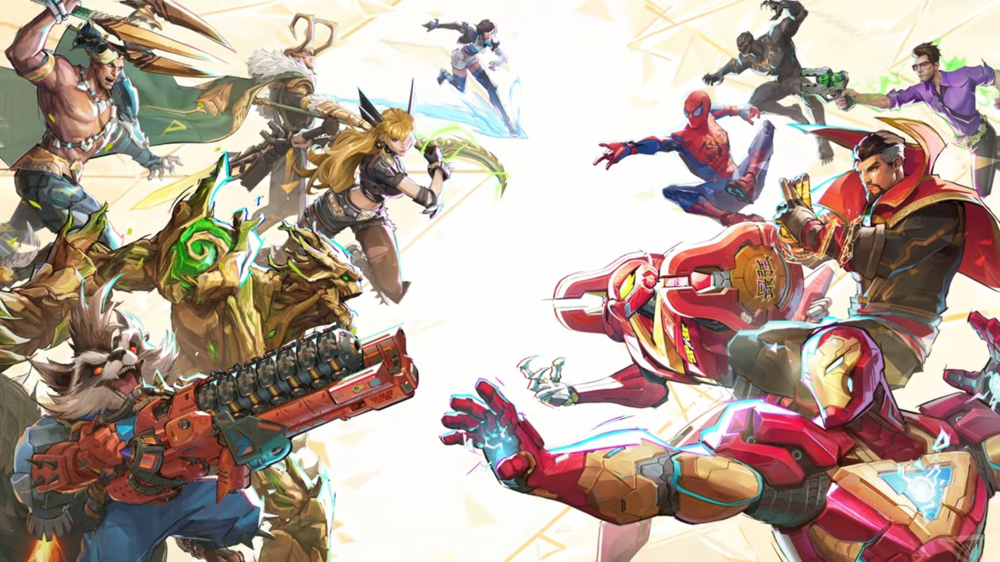

Marvel-rivals is a new game that came out December 6, 2024. Marvel-rivals is said to be one of the best games in 2024, the Steam player count for Marvel Rivals is currently 212589 players live. Marvel Rivals had an all-time peak of 644269 concurrent players on 11 January 2025.
Hela sits at top five wit a 28.73% pick rate., she is a great character because With her seasonal bonus, she does 168 per headshot and 84 per body shot. Without it, she does 140 per headshot, which still allows her to two-tap. Next up is, Cloak and Dagger in fourth place with a 39.73% pick rate. Cloak can heals 10 health per hit - 18 AoE per hit and 15 damage per round she is a hybrid dps and healer,Dagger does 75 damage per second and he has infinite ammo but has a range of 20m. Luna Snow is top 3 with a 44.77% pick rate. She is a healer, she heal about 75 per shot. venom is 2nd place with a pick rate of 48.18%, he dose about 20 damage per attack. and in first place Scarlet Witch has a 48.21%, she dose about 6 base damage + 0.3% of the enemy's Max Health per hit and her fire rate is 0.1s.